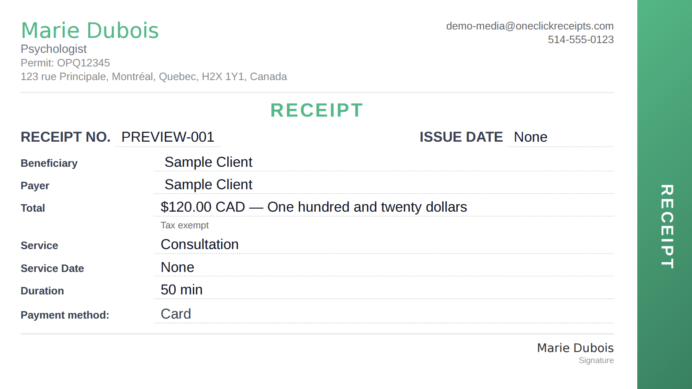

Cas fondateur
 OneClick
OneClick
Logiciel de gestion de cabinet pour des professionnelles et professionnels de la santé mentale.
Le problème opérationnel
Les professionnelles et professionnels indépendants de la santé mentale gèrent souvent l’horaire, la facturation, les reçus, les rappels et les renseignements sur la clientèle à travers des outils déconnectés et des flux administratifs répétitifs.
OneClick est un logiciel administratif pour ce travail. Il ne remplace pas le jugement clinique professionnel.

Comment une semaine de cabinet se déroule réellement
- Horairedisponibilités et réservations
- Séancele rendez-vous a lieu
- Reçu / facturegénéré à partir du calendrier
- Envoiun reçu, ou une semaine d’un coup
- Rapportsexploitation du cabinet, pas de notes cliniques
Ce que fait le produit
- Horaire et confirmations de rendez-vous
- Reçus et facturation
- Rappels et communication avec la clientèle
- Renseignements sur la clientèle
- Facturation et notes de frais
- Envoi sécurisé
- Rapports de cabinet
- Authentification et contrôles de confidentialité

Responsabilités
J’ai cofondé OneClick et je dirige la livraison technique: découverte client, co-conception avec des cliniciennes et des cliniciens, décisions produit, architecture, ingénierie complète, infrastructure infonuagique, sécurité, intégrations, déploiement et exploitation quotidienne. Le produit a été construit en parallèle de l’emploi chez CAE, et non à sa place.
Une décision venue des retours des cliniciennes et cliniciens
Les séances de co-conception — sept cycles avec 38 professionnelles et professionnels de la santé mentale, plus l’apport de 12 psychologues — revenaient au même fardeau: des reçus après chaque séance, un clic à la fois. Le produit génère donc reçus et factures à partir du calendrier, réutilise les détails des séances précédentes, et permet de réviser une fois puis d’envoyer une semaine de reçus en une seule action.
C’est pourquoi OneClick est resté sur l’horaire, la facturation, les reçus, l’envoi et les rapports, plutôt que de devenir un produit de notes cliniques.
Architecture
Le produit est un système opérationnel avec une architecture web conventionnelle, pas un modèle de langage enveloppé autour du travail clinique.
Étape
OneClick se prépare activement à un lancement public en octobre 2026.